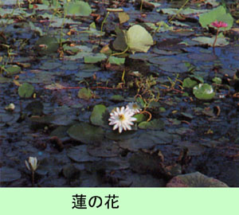

|
第５７ ダイナマイトを羊羹と間違えて食べた兵士
 一方このアイタペ作戦は失敗し敵陣を中央突破できず、しかも兵力は半分以下になってしまい作戦は中止された。前線の兵 士が戦列から脱落しカラワップに逃げ戻り、私どものいる残留隊付近に他の通信隊兵士が出没し段々とその人数が増えて来ました。私は独立家屋の将校室にたった1１人で起居し、私の当番兵は指揮班に起居させていました。指揮班長は陸軍曹長中川敬一氏 で髭面の応集兵でした。私が起居している将校室の床下にはダイナマイトを一箱保管して有りました。 ある日のこと、用事が出来て指揮班に中川曹長を訪ねた。指揮班の中に入っていったら、そこに居た兵隊達が私の顔を見て くすくす笑う。どうしたんだと！と言うと、昨夜、私が寝ている将校室の床下に忍び込んだ兵隊がいて、ダイナマイトを羊羹 と間違えて食べたとのことであった。指揮班はこの話でもちきりだったのであります。その話を聞き、 『ダイナマイトを食べてどうだった？』と、誰にともなく質問したら 『甘かったそうです』と、誰ともなく言う。そこでまた、 『食べた後でナントもなかったか？』と、重ねて訪ねたら 『下痢したそうです』と、皆が言った。 この頃は食料がなくなっていたので皆は腹を空かしており、なんでも食べてしまうようになっていました。蛇、トカゲ、蛙、 イナゴ、トンボ、蝉等なんでも手当たり次第取って食べていました。変わったところでは、畑にいる真っ白く太ってコロコロし たイモ虫を食べて、凄い腹痛を覚えて死にそうになったと告白した兵士もいた。我々は体が健全でないからイナゴさえも捕らえ ることが出来ない。中には知恵者がいて、朝早く取りに行くと、羽が朝露に濡れていて動作が鈍いから取りやすいと教えてくれ た。病弱な兵隊が蛇を見つけて追いかけたが、蛇の方が逃げ足が早いといって徴かに笑った。この話をそばで聞いていて哀れで ならなかった。 |